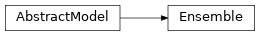
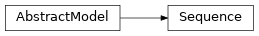

emloop.models¶
Classes¶
AbstractModel: Abstract machine learning model which exposes input and output names, run and save methods.Ensemble: Ensemble model facilitates assembling multiple models into one for more accurate predictions.Sequence: Model sequence provides simple abstraction for sequential application of multiple models to input batches.
-
class
emloop.models.AbstractModel(dataset, log_dir, restore_from=None, **kwargs)¶ Bases:
objectAbstract machine learning model which exposes input and output names, run and save methods. AbstractModel implementations are trainable with
emloop.MainLoop.
-
__init__(dataset, log_dir, restore_from=None, **kwargs)[source]¶ Model constructor interface.
Additional parameters (currently covered by
**kwargs) are passed according to the configurationmodelsection.Parameters: - dataset (
Optional[AbstractDataset]) – dataset object - log_dir (
str) – existing directory in which all output files should be stored - restore_from (
Optional[str]) – information passed to the model constructor (backend-specific); usually a directory in which the trained model is stored - kwargs – configuration section
model
- dataset (
-
restore_fallback¶ Return the fully-qualified name of the fallback restore class (e.g.
module.submodule.BaseClass).When restoring a model, emloop tries to use the fallback class if the construction of the model object specified in model configuration section fails.
Return type: strReturns: fully-qualified name of the fallback restore class
-
-
class
emloop.models.Ensemble(inputs, outputs, aggregation='major_vote', models_root=None, model_paths=None, dataset=None, eager_loading=False, **kwargs)[source]¶ Bases:
models.AbstractModelEnsemble model facilitates assembling multiple models into one for more accurate predictions.
Warning
Ensemble model can be used for inference only (i.e. no training is supported).
The typical usage is to train multiple (possibly different) models and assemble them with this class.
usage from config¶model: name: MyEnsemble class: emloop.models.Ensemble inputs: [images] outputs: [predictions] models_root: /var/project/models # will load all the models under this directory
usage from python¶import emloop as el model = el.models.Ensemble(inputs=['images'], outputs=['predictions'], aggregation='mean', models_root='/my/directory/with/models') # model.run(...)
-
AGGREGATION_METHODS= ['mean', 'major_vote']¶ Possible ensemble aggregation methods.
-
__init__(inputs, outputs, aggregation='major_vote', models_root=None, model_paths=None, dataset=None, eager_loading=False, **kwargs)[source]¶ Create new Ensemble.
If no
models_pathsare specified, all the sub-directories of themodels_rootwill be taken as the models to be assembled together.Parameters: - inputs (
Sequence[str]) – model input names - outputs (
Sequence[str]) – model output names - aggregation (
str) – aggregation method, one ofEnsemble.AGGREGATION_METHODS - models_root (
Optional[str]) – optional root directory of the models to be assembled together - model_paths (
Optional[Sequence[str]]) – optional list of model directory names/paths - dataset (
Optional[AbstractDataset]) – optional emloop dataset (will be passed to the assembled models) - eager_loading (
bool) – load all the models in the constructor - kwargs – additional kwargs (unused)
Raises: - AssertionError – if neither one of
models_rootandmodel_pathsis specified - AssertionError – if the specified
aggregationis not one ofEnsemble.AGGREGATION_METHODS
- inputs (
-
_load_models()[source]¶ Maybe load all the models to be assembled together and save them to the
self._modelsattribute.Return type: None
-
restore_fallback¶ Ensemble model does not provide restore_fallback.
Return type: None
-
run(batch, train=False, stream=None)[source]¶ Run feed-forward pass with the given batch using all the models, aggregate and return the results.
Warning
Ensemblecan not be trained.Parameters: Return type: Returns: aggregated results dict
Raises: ValueError – if the
trainflag is set toTrue
-
save(*args, **kwargs)[source]¶ Ensemble model can not be saved.
Raises: NotImplementedError – when called Return type: None
-
-
class
emloop.models.Sequence(model_paths, models_root=None, dataset=None, eager_loading=False, **_)[source]¶ Bases:
models.AbstractModelModel sequence provides simple abstraction for sequential application of multiple models to input batches. All the models are fed with the original inputs as well as the outputs of the preceding models. Ultimately, all the model outputs are returned.
Warning
Model sequence can be used for inference only (i.e. no training is supported).
usage from config¶model: name: MyPipeline class: emloop.models.Sequence models_root: /var/project/models model_paths: [step1, step2, step3]
usage from python¶import emloop as el model = el.models.Sequence(model_paths=['/path/to/step/step1', '/path/to/step/step2']) # model.run(...)
-
__init__(model_paths, models_root=None, dataset=None, eager_loading=False, **_)[source]¶ Create new model
Sequence.Parameters: - models_root (
Optional[str]) – optional root directory of the models to be assembled together - model_paths (
Sequence[str]) – list of model directory names/paths - dataset (
Optional[AbstractDataset]) – optional emloop dataset (will be passed to the underlying models) - eager_loading (
bool) – load all the models in the constructor
- models_root (
-
_load_models()[source]¶ Maybe load all the models to be applied and save them to the
self._modelsattribute.Return type: None
-
restore_fallback¶ Sequence model does not provide restore_fallback.
Return type: None
-
run(batch, train=False, stream=None)[source]¶ Run all the models in-order and return accumulated outputs.
N-th model is fed with the original inputs and outputs of all the models that were run before it.
Warning
Sequencemodel can not be trained.Parameters: Return type: Returns: accumulated model outputs
Raises: ValueError – if the
trainflag is set toTrue
-
save(*args, **kwargs)[source]¶ Sequence model can not be saved.
Raises: NotImplementedError – when called Return type: None
-